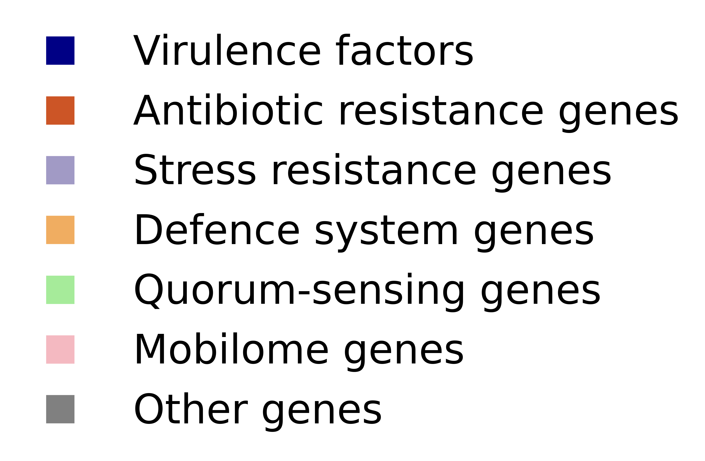

Genomic plasticity as a blueprint of diversity
in Salmonella lineages
in Salmonella lineages
Thomas Sicheritz-Pontén, Andrew Millard, Sandhya Amol Marathe, and Franklin L. Nobrega
The clusters of accessory shell and cloud genes form the region of genome plasticity (RGP) primarily originating from horizontal gene transfer events. These RGPs can be grouped into specific insertion spots based on the presence of conserved flanking persistent genes. All code can be found here.

Spot 1 – A spot for defence systems, particularly Septu type I
Hotspot 9 – A hotspot for virulence factors, particularly sod
Spot 11 – A spot for defence systems, particularly AbiE and Shango
Hotspot 15 – A hotspot for virulence factors, particularly cdt
Spot 17 – A spot for stress-resistance genes against gold
Spot 21 – A spot for virulence factors ste and sse
Spot 22 – A spot for defence systems CRISPR-Cas type I-E
Spot 30 – A spot for virulence factors lpf
Hotspot 31 – A hotspot for defence systems SEFIR
Hotspot 32 – A hotspot for virulence factors sse
Hotspot 36 – A hotspot for virulence factors, particularly fae
Hotspot 39 – A hotspot for multiple defence systems
Hotspot 43 – A hotspot for multiple defence systems
Hotspot 44 – A hotspot for multiple antibiotic resistance genes
Spot 47 – A spot for virulence factor tcp and defence systems Thoeris type I and II
Spot 51 – A spot for multiple antibiotic and stress-resistance genes
Spot 53 – A spot for stress-resistance genes against copper and silver
Hotspot 54 – A hotspot for multiple virulence factors
Hotspot 63 – A hotspot for multiple defence systems
Hotspot 66 – A hotspot for defence system CBASS type I
Spot 68 – A spot for defence system RM type I and IV
Hotspot 79 – A hotspot for virulence factor ssp
Hotspot 89 – A hotspot for defence system RM type III
Spot 92 – A spot for virulence factor sop
Spot 94 – A spot for virulence factor rat
Spot 103 – A spot for stress-resistance genes against arsenic
Legend for the plots of the spots
Abbreviations for the mobilome gene category
IE – Integration and ExcisionRRR – Replication, Recombination, or Nucleic Acid Repair
T – Interorganism Transfer
STD – Element Stability, Transfer, or Defense
P – Phage-Specific Biological Processes
HP – Hypothetical Proteins